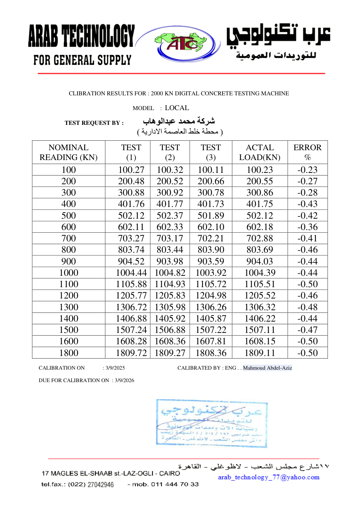

DOCUMENTS / TECHNICAL RECORDSالوثائق / السجلات الفنية
Calibration reportتقرير المعايرة
2000 kN Digital Concrete Testing Machine · Model: Localجهاز اختبار ضغط الخرسانة الرقمي 2000 كيلو نيوتن · الموديل: محلي
DOCUMENT RECORDسجل الوثيقة
2000 kN Digital Concrete Testing Machineجهاز اختبار ضغط الخرسانة الرقمي 2000 كيلو نيوتن
This is a calibration results document for a specific machine and customer. It is not a current, general certification for all equipment.هذه وثيقة نتائج معايرة لجهاز وعميل محددين، وليست شهادة عامة سارية لجميع الأجهزة.
Calibration dateتاريخ المعايرة03 Sep 2025
Due for recalibrationموعد إعادة المعايرة03 Sep 2026
The due date recorded in the document has passed. Confirm current calibration status with the company before relying on this report.موعد إعادة المعايرة المذكور في الوثيقة قد مضى. يُرجى تأكيد حالة المعايرة الحالية مع الشركة قبل الاعتماد على التقرير.
Download original PDFتحميل ملف PDF الأصليOpen full document ↗فتح الوثيقة كاملة ↗
Preview of supplied calibration reportمعاينة تقرير المعايرة المرسل